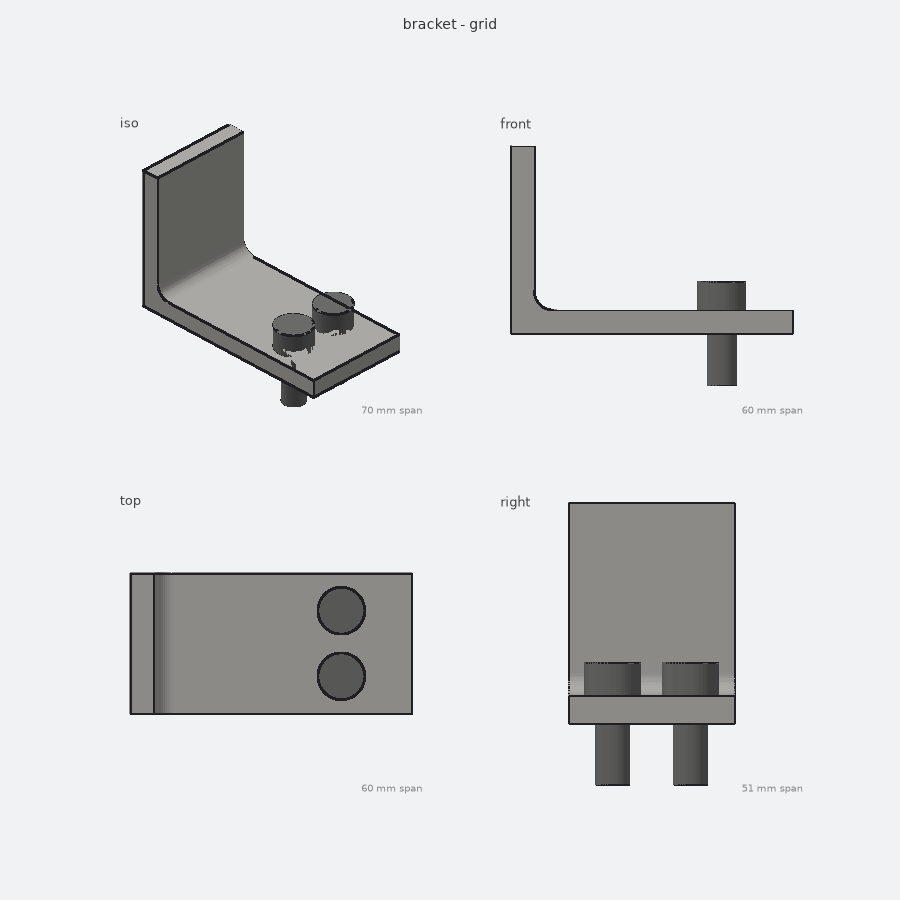
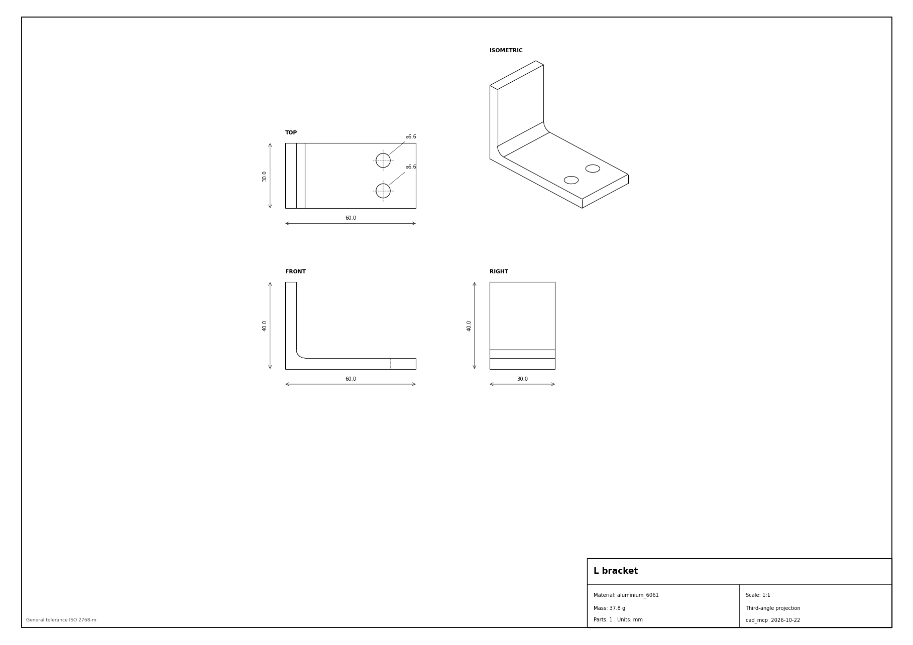
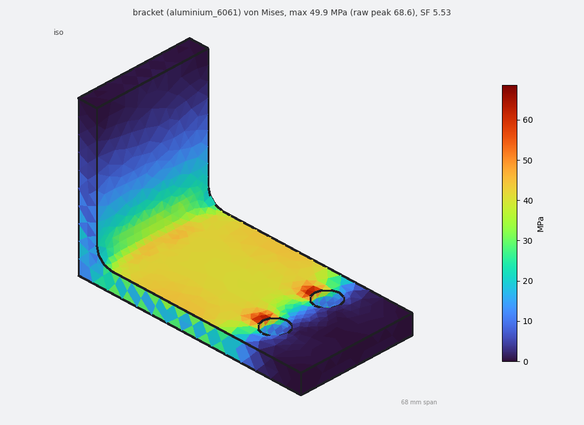
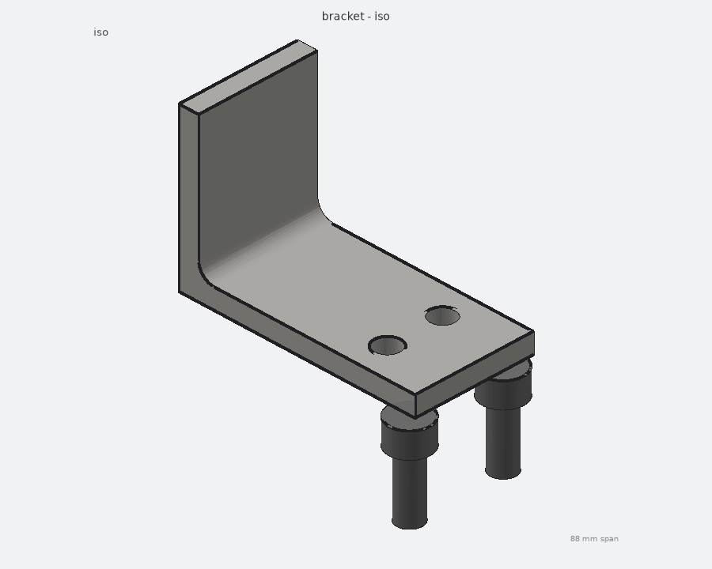

An AI model can only read and write text. It cannot click buttons in FreeCAD. cad_mcp is a small program that sits in between: it offers the AI a menu of CAD jobs, and when the AI picks one, it quietly runs FreeCAD in the background to do it and reports the result back in text (or as a picture).
Think of a restaurant. You order, a waiter takes the order, the kitchen cooks, and the food comes back on a plate.
Everything runs on one computer. The AI client starts cad_mcp as a child program and talks to it through two plain text pipes
(the program's input and output). For every job, cad_mcp starts a fresh, invisible copy of FreeCAD (freecadcmd),
hands it a job slip, and waits for a result slip.
Orange dot: an order travelling to FreeCAD. Blue dot: the result coming back. cad_mcp and FreeCAD run only on your computer; the AI provider (Anthropic, OpenAI) only sees the menu and the results, as part of the chat.
You type: "Make a 60 × 40 × 5 mm aluminium plate." Here is everything that happens, in order. It takes about a second.
add_primitive, with shape box,
length 60, width 40, height 5, material aluminium 6061. It fills in the form.tools/call message) into cad_mcp's input pipe..history/ (so you can undo), then writes a job slip
(job.json: "do add_primitive on bracket.FCStd with these numbers") and a three-line starter script.freecadcmd job.py: a copy of FreeCAD with no window. Like double-clicking FreeCAD, but invisible.bracket.FCStd, runs Part.makeBox(60, 40, 5), tags it with its
material, and saves the file.result.json: "ok, volume 12 000 mm³, bounding box …") and exits.
FreeCAD is now closed again.MCP messages are small JSON texts, one per line. There are only a handful of message types. Click through the conversation:
// AI client → cad_mcp: "Hi, I speak MCP version 2025-06-18" {"jsonrpc":"2.0","id":1,"method":"initialize", "params":{"protocolVersion":"2025-06-18","clientInfo":{"name":"claude-code"}}} // cad_mcp → AI client: "Hi, I'm cad_mcp, I have tools, resources and prompts" {"jsonrpc":"2.0","id":1,"result":{"serverInfo":{"name":"cad_mcp"}, "capabilities":{"tools":{},"resources":{},"prompts":{}}}}
// AI client → cad_mcp: "what's on the menu?" {"jsonrpc":"2.0","id":2,"method":"tools/list"} // cad_mcp → AI client: 45 menu items (one shown) {"jsonrpc":"2.0","id":2,"result":{"tools":[ {"name":"add_primitive","description":"Add a primitive solid...","inputSchema":{...}}, {"name":"run_fem","description":"Linear static stress analysis...","inputSchema":{...}}, ... ]}}
// AI client → cad_mcp: "please call add_primitive with these inputs"
{"jsonrpc":"2.0","id":7,"method":"tools/call","params":{
"name":"add_primitive",
"arguments":{"doc":"bracket","name":"Plate","shape":"box",
"dimensions":{"length":60,"width":40,"height":5},
"material":"aluminium 6061"}}}
// cad_mcp → AI client: the result, as text the model can read {"jsonrpc":"2.0","id":7,"result":{"content":[{"type":"text","text": "{ \"name\": \"Plate\", \"valid\": true, \"volume_mm3\": 12000.0, \"bbox\": [0,0,0, 60,40,5], \"material\": \"aluminium 6061\" }"}]}} // The "id":7 matches the request, so the client knows which call this answers.
// Results can also be pictures. render_view returns a PNG the model can look at:
{"jsonrpc":"2.0","id":9,"result":{"content":[
{"type":"text","text":"saved workspace/renders/bracket/iso.png"},
{"type":"image","mimeType":"image/png","data":"iVBORw0KGgoAAAANSUhEUgAA..."}]}}
This is the whole protocol for tools. The repo's client_raw.py sends exactly these lines by hand,
with no AI involved, so you can watch them scroll past.
cad_mcp is split in two halves that never share memory. They only pass files to each other.
{ "op": "add_primitive",
"doc": "workspace/bracket.FCStd",
"args": {"name": "Plate", "shape": "box",
"dimensions": {...}},
"result": "/tmp/fcmcp_x/result.json" }
@op("add_primitive") def add_primitive(doc, name, shape, dimensions, ...): if shape == "box": s = Part.makeBox(d["length"], d["width"], d["height"]) ... o = add_shape(doc, name, s, material) return describe(o) # volume, bbox, ...
Numbers alone can hide mistakes (a hole on the wrong face still has the right volume). So there is a
render_view tool: FreeCAD exports the shape as triangles, cad_mcp draws them into a PNG, and the PNG goes
back to the AI as an image. Modern models can look at images, so the AI checks its own work the way you would.

render_view(view="grid"): iso, front, top and side.
make_drawing runs FreeCAD's TechDraw to produce a real engineering drawing (SVG/PDF).The part is a normal FreeCAD file,
workspace/bracket.FCStd. You can open it in the FreeCAD app at any time and see exactly what the AI built.
Before any change, cad_mcp copies the file into
.history/bracket/0007.FCStd. undo just copies the previous one back. The last 20 versions are kept.
The AI doesn't hold the geometry in its head.
It asks (list_objects, list_faces, render_view) whenever it needs to know the current state.
45 tools, plus two read-only resources (the list of documents, the material table) and one prompt (a ready-made "design and validate a bracket" recipe). Those are the three kinds of things an MCP server can offer.
new_document, list_documents, list_objects, delete_object, set_properties, undo / history
add_primitive (box, cylinder, sphere, cone, torus), extrude_polygon, boolean (cut, join, intersect), transform, fillet, chamfer
create_sketch, pad, pocket, revolve, loft, sweep, hole (incl. counterbore), shell, mirror, linear / polar pattern
list_faces, list_edges, with selectors like normal:+Z z:max so the AI can say "the top face" instead of guessing a number
mass_properties (mass, centre of mass, inertia), check_interference (do parts overlap?), clearance, section views
run_fem: fix some faces, push on others, get max stress, max bend and the safety factor, plus a coloured stress picture
make_drawing (TechDraw views + title block), bom (parts list as CSV / Markdown)
multiple parts, standard screws / nuts / washers by size, STEP parts library, exploded views
export (STEP, STL, 3MF, OBJ, DXF, FCStd), import_step, render_view, run_script for anything not on the menu

run_fem: 300 N on the bracket, max stress 50 MPa, safety factor 5.5 (aluminium 6061).
render_view(explode=1): the bracket with its standard bolts pulled apart."An AI can only read and write text, so it can't use CAD software directly."
"So we wrote a small program, an MCP server, that sits next to FreeCAD. It hands the AI a menu: make a box, drill a hole, check the weight, test the strength, draw it. Each item says what inputs it needs."
"When the AI picks something, the server writes it on a slip, opens an invisible copy of FreeCAD, which does the real work on the actual CAD file, and passes the result back as text, or even as a picture the AI can look at."
"MCP is just the standard format for those slips, so the same server works with Claude, Codex, Cursor, anything."